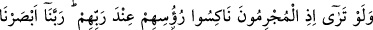
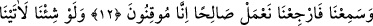
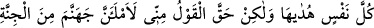
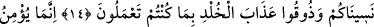
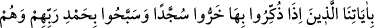
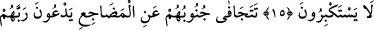
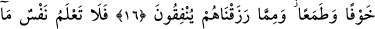
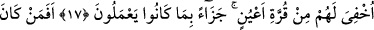
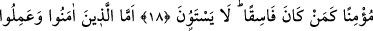
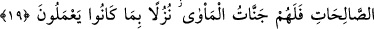
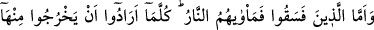
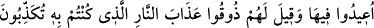
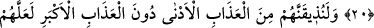
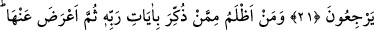
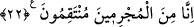
YAPTIKLARINA KARŞILIK OLARAK
12. O günahkârların, Rableri huzurunda başlarını öne eğecekleri, “Rabbimiz!
Gördük duyduk, şimdi bizi (dünyâya) geri gönder de, iyi işler yapalım, artık kesin
olarak inandık” diyecekleri zamanı bir görsen!
13. Biz dilesek, elbette herkese hidâyetini verirdik. Fakat, “Cehennemi hem
cinlerden hem insanlardan bir kısmıyla dolduracağım” diye benden kesin söz
çıkmıştır.
14. (O gün onlara şöyle diyeceğiz:) Bu güne kavuşmayı unutmanızın cezâsını
şimdi tadın bakalım! Doğrusu biz de sizi unuttuk; yaptıklarınızdan ötürü ebedî
azabı tadın!
15. Bizim âyetlerimize ancak o kimseler inanırlar ki, bunlarla kendilerine öğüt
verildiğinde, büyüklük taslamadan secdeye kapanırlar ve Rablerini hamd ile tesbih